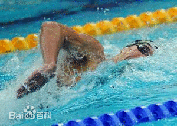

自由泳（freestyle）是竞技游泳比赛项目之一。严格的来说不是一种游泳姿势，它的竞赛规则几乎没有任何的限制，大多数游泳运动员在自由泳比赛时选择使用这种泳姿，这种姿势结构合理，阻力小，速度均匀、快速，是最省力的一种游泳姿势。对技术没有规则限制，比赛时，运动员多采用最快的爬泳技术，致使人们把爬泳亦称为自由泳。1896年第一届奥运会自由泳被列为正式的比赛项目。20世纪50年代以前，游泳运动员都非常重视两腿打水的作用，一般都是两臂轮流划水1次就打腿6次。后来科研材料证明打腿的能量消耗比划臂大得多，而推动身体前进的动力主要来自臂部的划水动作。因此以臂为主的现代自由泳技术重视臂的划水动作和两臂的配合，打腿动作在长距离游泳中已减少为2次或4次。但在短距离游泳中多数运动员仍然是打腿6次。
技术特点
自由泳的基本技术特点是，人体俯卧水中，头肩稍高于水面，游进时躯干绕身体纵轴适当左右滚动，两臂轮流划水推动身体前进。手入水后划水路线呈S形，呼吸与划水动作协调。当臂用力划水时，利用水流在头两侧形成的波谷吸气。
自由泳，其动作结构比较合理、省力、阻力小，是当前速度最快的一种游泳姿势。
具体解释来说即是：在自由泳整套动作中，腿部动作除了推进力，也起平衡作用，保持身体的稳定和协调双臂做有力地划水，双臂划水可分为前交叉、中交叉和后交叉
身体姿势
自由泳时身体俯卧在水面成流线型，背部和臀部的肌肉保持适当的紧张度，在游进中保持头部平稳， 躯干围绕身体纵轴有节奏的自然转动35゜~45゜。
腿部动作
自由泳腿部动作虽有一定的推进力，但主要起平衡作用，保持身体的稳定和协调双臂做有力地划水。要求两腿自然并拢，脚稍内旋，踝关节关松，以髋关节为轴，由大腿带动小腿和脚掌，两腿交替做鞭打动作，两脚尖上下最大幅度约30~40厘米，膝关节最大屈度约160゜。
臂部动作
自由泳是臂部动作是推动身体前进的主要动力。以一个周期分为入水、抱水、划水、出水和空中移臂五个不可分割的阶段。
1． 入水：完成空中移臂后，手在控制下自然放松入水。手的入水点一般在身体纵轴和肩关节的前后延长线之间。入水时手指自然伸直并拢， 臂内旋使肘关节抬高处于最高点，手掌斜向外下方，使手指首先触水，然后是小臂，最后是大臂自然插入水中。
2． 抱水：臂入水后，在积极向下方插入的过程中，手掌从向斜外下方转向斜内后方并开始屈腕、屈肘，肘高于手，以便能迅速过渡到较好的划水位置。抱水结束，手掌已经接近对水，肘关节屈至150゜左右，整个手臂像抱着一个大圆球似的为划水作准备。
3． 划水：划水是发挥最大推进作用的主要阶段，其动作过程可分为拉水和推水两个部分。紧接抱水阶段进入拉水，这时要保持抬肘，并使大臂内旋。同时继续屈肘，使手的动作迅速赶上身体的前进速度，能使水动作造成合理的动作方向呼路线，同时，也使主要肌肉群在良好的工作条件下进入推水动作，拉水至肩的垂直平面后，即进入推水部分，这时肘的屈度约100゜左右。大臂在保持内旋姿势，带动小臂，用力向后推水。同时，使肩部后移，以加长有效的划水路线。向后推水有一个从屈臂到伸臂的加速过程，手掌从内向上， 从下向上的动作路线加速划至大腿旁。整个划水动作，手的轨迹始于肩前，继之到腹下，最后到大腿旁，呈s形。
4． 出水：划水结束时，掌心转向大腿，出水时小指向上，手臂放松，微屈肘。由上臂带动，肘部向外上方提拉带前臂和手出水面，掌心转向后上方。出水动作必须迅速而不停顿，同时应该柔和、放松。
5． 空中移臂：紧接出水不停顿地进入空中移臂，移臂时，肘高于手。
6． 两臂配合：自由泳时两臂划水发生的交叉位置有前交叉、中交叉和后交叉三种类型。前交叉是指一臂入水时，另一臂已前摆至肩前方与平面成30゜左右。前交叉有利于初学者掌握自由泳动作和呼吸。中交叉是指一臂入水时，另一臂处在向内划水阶段与水平面成90゜。 后交叉是指一臂入水时，另一臂划至腹下，手与水平面成150゜左右。
臂腿呼吸配合
自由泳时，一般是在两臂各划水一次的过程中进行一次呼吸，以向右边吸气为例：右手入水后，嘴和鼻开始慢慢呼气。右臂划水至肩下，开始向右侧转头和增大呼气量。右臂推水即将结束，则用力呼气。右臂出水时，张嘴吸气，至空中移臂的前半部为止，并开始转头还原。然后，直至臂入水结束，有一个短暂的闭气过程，脸部转向前下。头部稳定时，右臂入水，再开始下一慢慢呼气的过程。
自由泳的呼吸与臂、腿配合，初学者一般者采6：2：1的方法，即呼吸一次、臂划两次、腿打6次，这种配合方法易保持平衡和协调掌握自由泳技术。
动作要领
自由泳时身体俯卧保持良好流线姿势，当速度快时肩背浮出水面，两肩配合 划水交替滚动，两腿交替打水。手臂动作是爬泳主要动力来源，手入水后勾手提肘以高肘姿势在躯干反复转动配合下沿身体下面成S形曲线向后划水，两手相继出水后经空中向前摆臂，形成一个连贯的加速过程。高肘加速划水是现代技术特征之一。换气是生理需要，对完整配合结构有一定影响，尤其是在高频率快速冲剌阶段。故在速度快时为了减少因换气动作对完整节奏的影响，多采用缩小换气动作时间或减少次数的方法进行。
速度快时，多用6次腿、2次臂和1次换气进行完整配合；中等速度时可用4次腿、2次臂、1次换气。由于自由泳游速快，出发要求起动快、前冲有力、滑行短并尽快浮出水面，故多用爬台式平拍入水技术。而转身可用身体任何部分触壁，为了赢得距离和转速，多采用前滚翻转身技术。
自由泳项目在比赛中占比重最大，因而成为实力的标志。自由泳技术正朝向实效发展，要求高体位、高肘加速后划为主，减少换气次数，动作连贯，节奏稳定合理。
练习方法
腿部动作
1． 陆地模仿练习
（1）坐姿打水：坐在池边或地上，两手后撑，两腿伸直，腿内旋使脚尖相对，脚跟分开成八字，两腿放松，以髋为轴，大腿带动小腿，上下交替打水。
（2） 卧姿打水：俯卧在凳上，做两腿上下交替打水，要求同上。
2． 水中练习
（1） 俯卧打水：手握池槽，或由同伴托其腹部，成水平姿势，两腿伸直，做直腿或屈腿打水。
（2） 仰卧打水：仰卧姿势，手握池槽，或由同伴帮助托其背部，做两腿交替打水，注意膝盖不要露出水面。
（3） 滑行打水：练习时要求闭气，两臂伸直并拢，头夹于两臂之间。
（4） 扶板打水：练习时两臂伸直，放松扶板，肩浸水中，手不要用力压板，呼吸自然。
手臂与呼吸配合
1．陆上模仿练习
（1） 地两脚开立，上体前屈，做臂划水的模仿练习。
（2） 同上练习，结合呼吸配合。
2．水中练习
（1） 站立水中，上体前倾，肩浸入水，做臂划水，边做边走，同时转头呼吸。
（2） 蹬边滑行后闭气，做两臂配合动作。
（3） 腿夹打水板，蹬边滑行后，做两臂划水，结合转头呼吸。
臂腿呼吸的配合
（1） 站立水中，上体前倾做划臂与呼吸配合的练习，借助用力划水向前移动，然后蹬离池底，两腿打水形成完整配合。
（2） 蹬边滑行打水漂浮5~10米，做自由泳臂划水与呼吸配合练习。
练习提示
自由泳技术不像蛙泳那样有间歇阶段，而且呼吸时还必须向侧转头，因而初学者往往显示得忙乱而且紧张。应着重于动作配合，注意动作的放松。